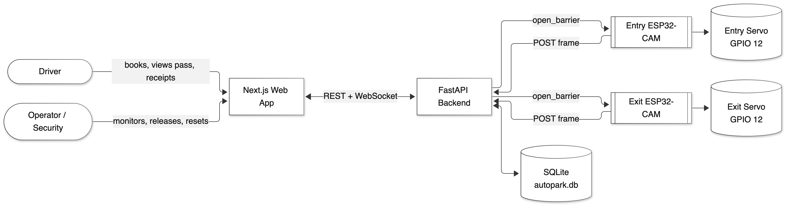

Parking is one of the few everyday engineering problems that is solved almost everywhere by adding hardware rather than by using information that already exists. A driver who reaches a gate has to be told, by a sensor in every bay or by a person in a cabin, whether a space is free. A facility owner who wants to know how full the lot is must either walk it or instrument it. Both answers cost money in proportion to the number of bays, and both stop working when the lot is extended, because every new space brings its own device, its own cable and its own failure mode.
This project starts from a different observation: a parking bay is free if and only if a vehicle has entered the facility and has not yet left it. That sentence is the whole design. If the entry and the exit of a lot are observed reliably, the state of every bay inside the lot can be derived from those two observations, and no device is needed inside the lot at all. AutoPark is an implementation of that idea. Two ESP32-CAM nodes watch the entry and the exit gate. Each posts a JPEG frame every five seconds to a FastAPI backend, which locates the number plate with a YOLOv11 detector, reads it with EasyOCR, matches it against bookings or active sessions, opens an SG90 boom barrier when the evidence is strong enough, and writes every decision — including every refusal — to an audit table. The occupancy of the six bays is then a query over the session table, not a measurement.
The project is deliberately a complete system rather than a recognition demonstration. A driver can register, pre-book a specific bay, arrive, see the assigned bay on a pass screen, leave, and receive an itemised receipt. An operator can watch the facility plan, inspect why a particular vehicle was refused, release a bay that has become stuck because its exit plate was unreadable, and reset the facility between demonstrations. A simulator reproduces the camera traffic through the same HTTP endpoints, so the whole system can be demonstrated and tested without the physical rig. The interesting engineering is therefore not the detector or the OCR engine, both of which are standard components, but the decision policy that sits between them and the barrier: when the evidence is insufficient, the system must refuse, because one wrong admission corrupts the occupancy state, the bill and the audit trail at the same time.
The work was carried out over the sixth and seventh semesters as a Phase–1 / Phase–2 pair. Phase–1 established the problem, the survey, the architecture and the recognition pipeline. Phase–2 completed the authorisation policy, walk-in allocation, the operator console, the billing path, the automated verification suite and the hardware rig, and produced the measurements and the honest list of what remains unmeasured that appear in Chapter 12.
The report is organised in the sequence prescribed for the seventh-semester Phase–2 submission. It begins with the front matter — certificate, declaration, acknowledgement, contents, lists of figures and tables, nomenclature and abstract — and then proceeds through fifteen chapters and the required back matter.
Chapter 1 introduces the problem setting, the proposition and the scope of the work, and describes how the report is organized. Chapter 2 states the objectives in a form that can be verified, together with the aim, the goal and the sequence of steps by which the goal is reached. Chapter 3 records the motivation for undertaking the work and defines the problem statement precisely, including what has been deliberately excluded. Chapter 4 surveys the three bodies of literature on which the project builds — occupancy sensing, automatic number plate recognition, and low-cost edge vision with actuation — and isolates the research gaps in a comparative table. Chapter 5 explains the design concepts: the layered edge–gateway architecture, the derived-state model of occupancy, the refusal-by-default authorisation policy, OCR-aware string matching and fail-closed actuation.
Chapter 6 lists the hardware and software tools actually used, with the version of each component as it appears in the repository. Chapter 7 presents the algorithms, flow charts, data-flow diagrams and state machines that implement the design. Chapter 8 explains the working principle of the system as a single narrative, from the capture of a frame to the movement of the barrier. Chapter 9 gives the block diagram, the circuit diagram of a gate node, the pin map, the wiring tables and the power topology. Chapter 10 describes the methodology: the phases, the development method, the verification strategy and the measurement protocol. Chapter 11 walks through the overall working of the system for the four flows that matter — pre-booked entry, walk-in entry, exit and operator exception handling — with sequence diagrams.
Chapter 12 reports the results: the automated test suite, the interface checks, the defect log, two diagnostic records captured on the bench, the engineering metrics measured from the repository, the analytical scaling argument, a comparison with related approaches, and an explicit list of measurements that have not yet been made. Chapter 13 discusses applications, advantages and limitations. Chapter 14 states the outcome of the project against each objective and records the reflection notes of the team. Chapter 15 concludes, sets out the scope for future work, and gives the month-wise workflow of the project.
The back matter contains the references in IEEE format, an appendix with code excerpts, the API reference, the bill of materials, the assembly and bench procedures, the PO/PSO mapping, the project cost estimate, and the required declarations on papers, competitions, funding and patents. Every reference cited in the body appears in the reference list, and every reference in the list is cited in the body.
The objectives below are written so that each one can be checked against something observable — a test result, an API response, a database row or an inspection of the code — rather than against an intention. Each objective states what is to be achieved and, in one sentence, how the achievement is evidenced. The evidence is repeated in Table 1 and again, with outcomes, in Table 23 of Chapter 14.
Objective 1 — Detect and read vehicle plates from gate frames. Build a recognition pipeline that accepts a JPEG frame from a low-cost camera, locates the plate region, reads the characters and returns a ranked list of candidates with a confidence for each, or an explicit failure stage when no reading is possible. Evidence: the pipeline runs end to end and exposes per-stage diagnostics through /api/anpr/diagnostics.
Objective 2 — Authorise pre-booked and walk-in vehicles. Admit a vehicle whose plate matches exactly one pending booking, and admit an unreserved vehicle by allocating the next free bay automatically, while refusing when the plate is unknown and walk-in admission is disabled. Evidence: simulated entry tests for booked, walk-in and unknown plates.
Objective 3 — Honour the bay that the driver booked. When a booking names a specific bay, the entry allocator must bind that bay if it is still free, and must not silently substitute a different one. Evidence: an executed test in which bay B3 is requested at booking and B3 is the bay allocated at entry.
Objective 4 — Derive occupancy from gate events. The status of a bay must change only as a consequence of a session being created or closed, never as a result of a sensor reading inside the lot. Evidence: layout and summary responses remain consistent with the session table after every entry and exit.
Objective 5 — Control a physical barrier automatically. Drive an SG90 boom barrier from 0° to 90° and back after five seconds, but only when the backend returns an explicit authorisation for that gate. Evidence: the response contract and the firmware truth table; the bench actuation test is listed as pending in Chapter 12 rather than claimed.
Objective 6 — Provide real-time visibility. Broadcast every state transition over a single WebSocket channel so that the driver dashboard, the pass screen and the operator console update without a page refresh, and recover correctly after a dropped connection. Evidence: events observed simultaneously on three clients.
Objective 7 — Produce auditable billing. Compute the charge at exit from the session duration using a single server-side tariff (₹30 for the first hour and ₹20 for every additional started hour), and present it as an itemised receipt that cannot be edited by the client. Evidence: tests at the sixty-minute and sixty-one-minute boundaries.
Objective 8 — Allow demonstration without hardware. Provide simulator endpoints that create real sessions, real bills and real audit rows through the same code paths as the cameras, so that the system can be demonstrated and regression-tested on a laptop. Evidence: the entire automated suite runs through the simulator.
| # | Objective | How it is met in the build | How it is evidenced |
|---|---|---|---|
| O1 | Detect and read plates from gate frames | YOLOv11 plate detector, four preprocessing variants, three-frame burst voting | Working pipeline; per-stage diagnostics API |
| O2 | Authorise pre-booked and walk-in vehicles | Unique match against pending bookings, or dynamic allocation of the first free bay | Simulated walk-in and booking tests; full-lot refusal |
| O3 | Honour the bay chosen at booking | Booking binds a slot identifier; the allocator reads it before falling back | Executed test: B3 requested, B3 allocated |
| O4 | Derive occupancy from gate events | Bay state machine driven only by session creation and closure | Layout and summary consistent after entry and exit |
| O5 | Control a physical barrier | SG90 servo, 0°/90°, five-second hold, gated on the backend flag | Contract and truth table; bench test pending |
| O6 | Provide real-time visibility | Single WebSocket channel with snapshot-on-reconnect | Live updates on three clients without refresh |
| O7 | Produce auditable billing | Duration computed at exit; ₹30 first hour, +₹20 per started hour | Receipts page and exit response verified |
| O8 | Demonstrate without hardware | Hardware-in-the-loop simulator calling the same endpoints | Authorised and unauthorised simulations, reset flow |
To design, implement and validate a smart parking system in which the occupancy of a multi-bay facility is inferred from events observed at the entry and exit gates rather than measured by a sensor in every bay, while preserving accurate availability information, controlled vehicle access and an auditable billing record.
The goal is a working six-bay prototype, deployed on a facility LAN, in which a driver can reserve a bay in advance or arrive without one, a camera at each gate reads the plate, the server decides whether the barrier should open, the bay is bound and released correctly, a charge is computed at exit, and every decision — admit or refuse — can be reconstructed afterwards from stored evidence. The success criterion is not recognition accuracy on a benchmark; it is that the substitution of two gate cameras for six bay sensors holds together as a system, with the costs of the substitution stated plainly.
The motivation for the project came from watching the same pattern repeat in the streets around the college and in the commercial areas of Bengaluru. Cars slow down at every side road looking for a space, queue behind a barrier while an attendant writes a number on a slip, and then circle again on the way out because nobody recorded when they came in. The inefficiency is visible, the data to fix it exists, and the hardware normally proposed to capture that data is disproportionate to the size of the lot.
Driver experience. Arriving without knowing whether a bay is free causes circling, delay and congestion. The classical study of cruising for parking estimated that a substantial share of traffic in congested commercial districts — of the order of thirty per cent in the districts studied — consists of vehicles searching for a space [2]. A driver who knows before turning in that a bay is held for the vehicle removes most of that search, and a driver who arrives without a booking benefits from being told immediately which bay has been assigned.
Operator economics. In a sensor-per-bay design, every additional bay adds a device, a power drop, a mounting point, a cable run and one more thing that can fail. The cost of the sensing layer therefore grows linearly with capacity, and retrofitting an existing unmonitored lot is invasive because cabling has to reach every space. A gate-only design adds no marginal sensing hardware per bay: the second camera is the last camera, whatever the size of the lot. For a department lot of six bays the difference is modest in absolute terms, but the shape of the cost curve is what matters, and it is the property the project set out to demonstrate.
Accountability. A plate-indexed audit trail links every entry, exit and charge to a vehicle. A manned gate produces a paper slip that is easy to lose and easy to dispute; a gate that records the plate, the confidence, the failure stage and the decision produces evidence that can be examined after the fact. This matters not only for revenue but for the safety of the decision: when a vehicle is refused, the operator should be able to see whether the camera was blurred, whether the plate was read but unmatched, or whether two bookings were too similar to separate.
Practicality for a campus. A six-bay pilot is representative of a department lot, is buildable with hobby-grade hardware within an academic budget, and exercises every part of a real system: authorisation, actuation, billing and monitoring. A larger pilot would have demonstrated the same properties at greater cost and with more opportunity for the demonstration to fail for reasons unrelated to the design.
Academic motivation. Most student projects in this area stop at a detector that draws a box around a plate. The part that is genuinely difficult — deciding what to do when the detector is not sure — is usually skipped. The team was interested in that part: in treating recognition as evidence rather than as an answer, and in building a system whose failure behaviour is as defensible as its success behaviour.
Small and medium parking facilities cannot afford to instrument every bay, yet drivers and operators need live availability, controlled access and an auditable record of who parked where and for how long. The two remedies available today are both unsatisfactory at this scale. Per-bay sensors give accurate occupancy but require one device, one power drop and one mounting point per bay, so capital and maintenance cost grow linearly with capacity and retrofitting an existing lot is disruptive. Fully manual gates are cheap to install but cannot provide live availability, an audit trail or automated billing, and they depend on an attendant being present.
There is therefore a gap for a system that provides live bay availability, automated access control and auditable billing, using sensing hardware whose cost does not scale with the number of bays, and whose behaviour when a plate cannot be read is defined rather than accidental.
Formally, the system to be built must satisfy the following. Given a facility of n bays served by exactly two camera nodes, one at the entry gate and one at the exit gate, the system must maintain a bay-state function S(t) that is correct with respect to the sequence of admitted entries and completed exits; must admit a vehicle only when the plate evidence resolves to exactly one authorised vehicle or when an unreserved bay can be allocated; must refuse, with a recorded reason, in every other case; must compute a charge from the interval between admission and release; and must expose the resulting state to drivers and operators within two seconds of the change. The sensing cost of the system must be independent of n.
Two capabilities that a commercial product would require are deliberately excluded, and the reason for each exclusion is stated so that the boundary is a design decision rather than an omission. Unreserved walk-in entry, by contrast, is fully integrated: it is part of the problem rather than an extension, because a real lot cannot operate on reservations alone.
| Excluded | Reason for exclusion |
|---|---|
| Online payment | Adds a payment-gateway integration and a compliance surface that has no bearing on the central hypothesis. The bill is computed, itemised and stored; no money is moved. |
| Multi-level and multi-lot management | The architecture generalises, but a second lot multiplies hardware and does not test the claim. The schema currently has no lot identifier; adding one is listed as future work. |
| Native mobile application | The web client is responsive and usable on a phone in a browser; a native client is a packaging exercise rather than an engineering contribution. |
| Per-bay sensors | Excluded by design — the substitution of gate observation for per-bay measurement is the hypothesis under test. |
| Vehicle make, colour and damage capture | Not required for authorisation or billing, and would add a second model and a privacy surface without changing the occupancy argument. |
Bay. A single parking space, identified by a slot number such as A2. The pilot has six: A1–A3 in zone A and B1–B3 in zone B.
Booking (pre-registration). A reservation made before arrival. It binds a specific bay and expires at a stated time. A booking holds the bay: the bay is not offered to anyone else while the booking is pending.
Session. The record of a vehicle being inside the facility. It is created at entry and closed at exit, and it carries the entry time, the exit time, the bay, the plate and the evidence behind the admission decision.
Occupancy. In this report, a derived property: a bay is occupied if and only if an active session references it. It is never read from a sensor inside the lot.
Candidate. One plate string produced by the OCR stage, together with a confidence and the preprocessing variant that produced it.
Refusal. Any decision that leaves the barrier closed. Every refusal carries a machine-readable status such as no_plate, unauthorized, ambiguous, already_allocated or parking_full.
This chapter positions AutoPark against the bodies of work it builds on: how parking occupancy is sensed, how number plates are recognised, how low-cost edge devices are used for vision and actuation, how real-time monitoring interfaces are built, and how access control and audit are handled in a web application. The aim is not to catalogue the literature but to isolate the gap that the project addresses, and to show that each design choice has a justification in prior work.
Lin, Rivano and Le Mouël classify smart parking systems by the sensing layer used to detect the presence of a vehicle [1]. The dominant approach is a sensor per bay: an ultrasonic, magnetometer, infrared or inductive-loop device mounted in or beside each space, reporting occupancy to a gateway. These systems are accurate because they measure the state of each bay directly, and commercial deployments are common in multi-storey facilities. Rajabioun and Ioannou take the complementary approach of predicting availability from historical and spatio-temporal data rather than measuring it [25], which is useful for advising a driver before the journey but does not replace access control.
The economic structure of the per-bay approach is the problem. Every bay requires one device, one power drop, one mounting point and one more thing that can fail. For a facility with n bays, the sensing layer grows as O(n) in capital cost, installation time and maintenance. Retrofitting an existing unmonitored lot is invasive, because cabling must reach every space.
A second family of designs uses vision from a vantage point: a camera overlooking a row or a level, with spaces delineated in the image and a classifier deciding occupancy per region. This amortises hardware over many bays, but each camera must see the spaces it serves, so coverage still scales with the geometry of the lot, and occlusion by large vehicles degrades accuracy. Camera-based occupancy systems also carry privacy and storage costs because they record the interior of the facility continuously.
Gate-based recognition, the approach taken here, sits between these families. The camera observes only the entrance and the exit, so two devices serve an arbitrary number of bays. Occupancy is not measured at all; it is inferred from the sequence of entries and exits. This is the same principle used by ticket-based and barrier-controlled commercial car parks, where the ticket count, rather than a sensor, is the occupancy record. The contribution of this project is to replace the ticket with an automatically recognised plate, which makes the record auditable without a human at the gate.
Automatic number plate recognition has a long literature; Du et al. survey the classical pipeline of plate localisation, character segmentation and character recognition [3]. Classical systems rely on edge statistics, morphology and colour cues to find the plate, then on template matching or a small classifier per character. They work well under controlled illumination and fixed camera geometry, and degrade quickly when the plate is small, skewed or unevenly lit.
Two developments changed the practical design. First, single-stage object detectors such as YOLO reframed localisation as a regression problem solved in one network pass, giving real-time detection at modest cost [4]. Multi-scale variants such as SSD [21] and later members of the YOLO family [26] improved the detection of small objects, which is exactly the regime of a plate seen from a gate camera. Modern plate-specific models, including YOLO11 [5], are accurate enough to replace the hand-crafted localisation stage entirely; Laroca et al. demonstrated a complete real-time ALPR pipeline built on a YOLO detector [19], and Silva and Jung extended the idea to unconstrained scenarios with a segmentation-free recognition network [20].
Second, deep-learning OCR engines removed the need for explicit character segmentation. Sequence models trained with connectionist temporal classification [24] over recurrent networks [23] made it possible to decode a whole text line without cutting it into characters; CRNN [28] and the EAST detector [27] are the reference designs for scene text. EasyOCR [6] packages these ideas behind a simple interface and returns a confidence per token, which suits an unconstrained scene such as a plate photographed by a low-cost camera. Underlying all of these are convolutional feature extractors of the VGG [22] and residual families, and the deep-learning frameworks and annotated datasets that made them reproducible [17], [18].
A recognition pipeline assembled from these parts is accurate but not certain. That distinction matters for access control: a character error rate of a few per cent is acceptable for a toll audit, but a single wrong admit corrupts the occupancy state of a lot. The literature on ANPR evaluation therefore reports precision and recall per condition rather than a single accuracy figure, because performance is strongly condition-dependent [3].
The design consequence adopted in this project is to treat recognition as evidence rather than as an answer. Multiple preprocessing variants of the same crop are read independently, the readings are scored for confidence and agreement, several frames are accumulated, and the resulting candidates are compared against known registrations using a string-distance metric [8] rather than a single exact comparison. When the evidence does not resolve to one registration, the system refuses.
The ESP32 family provides a microcontroller with integrated Wi-Fi at a price point that makes a camera node disposable [9]. The ESP32-CAM variant adds an OV2640 sensor and PSRAM, enough to capture and upload a VGA JPEG without a companion processor. This class of device is widely used in IoT prototypes because it removes the need for a single-board computer at the edge: capture, transport and actuation can all run on one microcontroller.
Actuation at the gate is normally a barrier arm driven by a DC motor, a solenoid or a hobby servo. A servo is attractive for a prototype because it is position-controlled: the controller commands an angle rather than a direction, and no limit switches are needed to stop the arm. The SG90 class of micro-servo is cheap and adequate for a lightweight arm, at the cost of torque and of having no position feedback to the controller [10].
The architectural lesson taken from this literature is that the edge device should be a sensor and an actuator, not a decision maker. Deployments that place authorisation logic on the camera node struggle to keep state consistent across nodes, because two nodes can disagree about the state of the lot and there is no shared transaction. AutoPark therefore keeps all decisions on the server and reduces the firmware to capture, upload, and move the arm when told.
Operator dashboards need to reflect state changes within a second or two. The classical solution is client polling of a REST endpoint [15], which is simple but generates redundant requests and introduces a polling interval of latency. Server-sent events and WebSockets invert the direction: the server pushes each transition to connected clients. For a small number of screens and infrequent events, a single WebSocket channel is both simpler to operate than a message broker and more responsive than polling.
The relevant design detail, often omitted in student projects, is recovery. A WebSocket stream does not replay missed messages, so a client that reconnects after a network drop must re-read a snapshot before resuming the stream. This project implements that snapshot-then-stream pattern, and it is the reason the dashboard can be trusted after a laptop sleeps or a Wi-Fi handover.
The web tier of a parking product is a conventional authenticated application. JSON Web Tokens [14] with a server-side signature provide stateless session identity, and password storage follows the OWASP recommendation of a slow, salted hash [16]. The framework choices — FastAPI for a typed HTTP API [11], SQLAlchemy for the persistence layer [13], OpenCV for image processing [7] and Next.js for the client [12] — are unremarkable; they are selected because they minimise the code needed for the parts of the system that are not the contribution.
The audit requirement is more interesting. A gate system must be able to answer, after the fact, why a particular vehicle was admitted or refused. That requires recording the evidence behind each decision, not only its outcome. This is why the schema contains a detection-event table separate from the session table, and why the recognition pipeline exposes per-stage diagnostics rather than a single success flag.
Table 3 summarises the works that shaped the design. The final two columns record what each work contributes and where it stops, because the gaps column is what the project is built on.
| Ref. | Authors et al. | Title / focus | Method and contribution | Advantages | Disadvantages / gaps |
|---|---|---|---|---|---|
| [1] | Lin, Rivano, Le Mouël, 2017 | A survey of smart parking solutions | Taxonomy of sensing, communication and application layers | Comprehensive map of the field; cost structure made explicit | No gate-only occupancy model; failure behaviour not analysed |
| [2] | Shoup, 2006 | Cruising for parking | Empirical study of search traffic in commercial districts | Quantifies the cost of not knowing availability | Policy study, not a system design |
| [3] | Du, Ibrahim, Shehata, Badawy, 2013 | ALPR: a state-of-the-art review | Classical localisation, segmentation and recognition pipeline | Clear account of condition dependence | Pre-deep-learning; no decision policy |
| [4] | Redmon et al., 2016 | You only look once | Single-stage detection as regression | Real-time detection at modest cost | Weak on small objects; no plate specialisation |
| [5] | Ultralytics, 2024 | YOLO11 documentation and models | Current detector family with training recipes | Strong accuracy/speed trade-off; easy fine-tuning | Requires a labelled plate dataset |
| [6] | Jaided AI | EasyOCR | Scene-text detection and recognition with per-token confidence | No character segmentation; 80+ languages | Weak on low-resolution, blurred crops |
| [7] | Bradski, 2000 | The OpenCV library | Image processing primitives | Fast, portable; thresholding and filtering | Library, not a method |
| [8] | Levenshtein, 1966 | Binary codes capable of correcting deletions and insertions | Edit-distance metric | Principled tolerance of single-character errors | No notion of visual confusion or confidence |
| [9] | Espressif, 2023 | ESP32 series datasheet | Microcontroller with integrated Wi-Fi | Cheap, capable edge node | Limited RAM; no secure element by default |
| [10] | TowerPro | SG90 micro-servo datasheet | Position-controlled hobby servo | Angle commanded directly; no limit switches | No position feedback; limited torque |
| [11] | Ramírez | FastAPI documentation | Typed Python HTTP framework | Automatic validation and OpenAPI docs | Single-process concurrency model |
| [12] | Vercel | Next.js documentation | React framework with App Router | Server/client boundaries; fast iteration | Client state must be reconciled with the server |
| [13] | SQLAlchemy | SQLAlchemy 2.0 documentation | ORM and query layer | Portable models; transactions | SQLite write concurrency limits |
| [14] | Jones, Bradley, Sakimura, 2015 | JSON Web Token (RFC 7519) | Signed stateless identity token | Simple for browsers and devices | No revocation without extra infrastructure |
| [15] | Fielding, 2000 | Architectural styles for network-based software | REST architectural constraints | Resource-oriented, cacheable API design | Polling-based updates add latency |
| [16] | OWASP | Password storage cheat sheet | Slow salted hashing guidance | Defensible credential storage | Guidance only; no rate limiting |
| [17] | Deng et al., 2009 | ImageNet | Large-scale labelled image database | Enabled transfer learning for detection | General objects, not plates |
| [18] | Paszke et al., 2019 | PyTorch | Deep-learning framework | Reproducible training and inference | Heavy dependency for a small deployment |
| [19] | Laroca et al., 2018 | Real-time ALPR based on YOLO | End-to-end ALPR with a YOLO detector | Fast enough for gate use; high recall | Fixed camera geometry; no authorisation policy |
| [20] | Silva, Jung, 2018 | Plate detection in unconstrained scenarios | Segmentation-free recognition network | Robust to viewpoint and lighting | Computationally heavy for an edge server |
| [21] | Liu et al., 2016 | SSD: single shot multibox detector | Multi-scale single-stage detection | Better small-object recall than early YOLO | Still needs plate-specific training |
| [22] | Simonyan, Zisserman, 2015 | Very deep convolutional networks | Deep CNN feature extractor | Strong transfer features | Large parameter count |
| [23] | Hochreiter, Schmidhuber, 1997 | Long short-term memory | Recurrent sequence model | Handles variable-length text lines | Needs substantial training data |
| [24] | Graves et al., 2006 | Connectionist temporal classification | Alignment-free sequence decoding | Removes explicit character segmentation | Assumes monotonic alignment |
| [25] | Rajabioun, Ioannou, 2015 | Parking availability prediction | Spatio-temporal multivariate model | Useful pre-trip advice | Predicts, does not authorise or bill |
| [26] | Bochkovskiy et al., 2020 | YOLOv4 | Improved single-stage detector | Strong accuracy at real-time speed | Heavier than needed for a six-bay lot |
| [27] | Zhou et al., 2017 | EAST scene-text detector | Direct regression of text regions | Fast, rotation-aware | Scene text, not plate-specific |
| [28] | Shi, Bai, Yao, 2017 | End-to-end scene-text recognition | CRNN with CTC decoding | Whole-line recognition | Recognition only; localisation separate |
Gap 1 — sensing cost scales with the number of bays. Occupancy sensing is the cost driver in smart parking, and virtually every published design instruments each bay or each zone [1]. Gate-only occupancy inference is used in practice by ticket-based operators, but it is rarely treated as an academic design and its failure modes are rarely analysed. No surveyed work quantifies what happens to availability accuracy when the only observation is at the boundary of the lot.
Gap 2 — recognition accuracy is reported, decision error is not. ANPR papers usually report a single accuracy or a precision/recall pair for the recognition stage [3], [19], [20]. The property that matters for access control is the decision error rate — false admits and false rejects — under a refusal policy. A system that refuses when uncertain has a different error profile from one that always returns its best guess, and the two cannot be compared on recognition accuracy alone.
Gap 3 — integration and audit stop short. Prototypes typically demonstrate detection, or allocation, or a dashboard, but not recognition, authorisation, actuation, billing and monitoring as one auditable pipeline. The evidence behind a decision is usually discarded, so the system cannot explain a refusal after the fact.
Gap 4 — low-cost edge hardware is used as a camera, not as a system component. Many IoT parking prototypes put decision logic on the edge node, which makes state consistency across nodes difficult. The alternative — a deliberately stupid edge and a single authoritative server — is well established in practice but under-reported in student work.
The survey supports three conclusions that shaped the design. First, the sensing architecture, not the recognition algorithm, is where the cost of a smart parking system is decided, and a gate-only architecture is a legitimate and under-studied alternative for small lots. Second, plate recognition must be treated as evidence with a confidence and a failure stage, and the decision to admit must be separated from the recognition itself so that ambiguity can be refused rather than guessed. Third, the value of the system depends on the integration: a plate read that is not linked to a booking, a bay, a bill and an audit record is a demonstration, not a parking system.
AutoPark addresses the three gaps together: a two-camera architecture whose sensing cost is constant in the number of bays, a refusal-by-default authorisation policy with OCR-aware matching, and an end-to-end implementation whose decisions are recorded with evidence. The next chapter describes the design concepts that implement these conclusions.
This chapter explains the design concepts that hold the system together. They are presented as concepts rather than as components because each one is a rule that constrains many parts of the implementation: the architecture rule decides where state lives, the occupancy rule decides what a bay status means, the refusal rule decides what happens when the evidence is weak, and so on. Together they form the conceptual framework within which the algorithms of Chapter 7 and the implementation of Chapters 8–11 are written.
AutoPark is an edge–gateway, event-driven architecture with a thin browser client. The edge tier consists of two ESP32-CAM nodes that do exactly two things: capture a JPEG every five seconds and actuate a servo when told to. They hold no state about the lot. The application tier is a FastAPI service that owns all decisions — identity, plate matching, bay allocation, billing and audit — and is the single source of truth. The presentation tier is a Next.js application that renders state and reacts to WebSocket events; it never computes occupancy. The data tier is SQLite accessed through SQLAlchemy, with five tables.
The important architectural consequence is that cameras are sensors, not controllers. If a camera is replaced, the lot state is unaffected. If the backend is down, the barriers fail closed, because the firmware opens the arm only on an explicit boolean in the response. If the browser is closed, nothing about the lot changes. Every one of those properties follows from putting the state in one place.

A bay is occupied if and only if an active session references it. This is the central design concept of the project, and it is enforced structurally rather than by convention. A bay becomes occupied when the allocator creates a session inside a transaction that also changes the bay status; it becomes free when the exit path closes that session inside a transaction that also restores the bay status. There is no other writer. The dashboard, the summary endpoint and the operator plan all read the same derived value, so they cannot disagree with each other or with the audit trail.
The consequence is a different kind of accuracy claim from a per-bay sensor. A sensor measures the bay continuously and is right about the bay even when it is wrong about the vehicle. A derived state is exactly right about the vehicle and can be wrong about the bay if an event is missed — specifically, if a vehicle leaves and its plate is never read. The design accepts that failure mode and provides a documented manual release for it, rather than pretending that the derived state is as robust as a measurement. The trade is stated in Table 20 of Chapter 12 and in the limitations of Chapter 13.
Authorisation is designed around a simple asymmetry: a false reject costs one retry, while a false admit creates a wrong bay, a wrong bill and a corrupted occupancy map. The system therefore refuses whenever the evidence is insufficient, and it defines insufficiency numerically rather than intuitively. Four independent gates decide admission:
Because the gates are independent, a failure of one does not silently weaken the others. Ambiguity in particular is treated as a first-class outcome: when two bookings are plausible, the system does not pick the higher score, it stops and raises an operator alert. This inverts the usual “best effort admit” behaviour of demonstration ANPR systems, and it is the property that makes the system defensible in front of an examiner.
A plate read by a cheap camera is not a string, it is a string plus a set of visual confusions. The letter O and the digit 0 are the same shape at low resolution; so are I and 1, S and 5, B and 8, Z and 2, G and 6. The matcher therefore canonicalises both the candidate and the registered plate through a confusion map before comparing them, then computes a Levenshtein distance on the residual strings, then discounts the resulting similarity by the OCR confidence. The formula is:
adjusted = similarity × (0.80 + 0.20 × ccand)
with a minimum adjusted score of 0.72 for a match to be considered at all. The confidence factor prevents a confident wrong read from being discounted into a match, and the floor of 0.80 prevents a marginal read from outranking a strong one. The worked examples in Chapter 7 show both a tolerated single-character error and a refused ambiguity.
The barrier has two states and one rule: it opens only when the server says so. The firmware parses the response, reads a boolean, and calls the open routine only if that boolean is true; every other outcome — timeout, malformed JSON, HTTP error, missing field — leaves the arm at zero degrees. The servo is open-loop, so the system never claims to know where the arm is; the user interface reports the commanded state and says so. This is a deliberate degradation design: the failure of any component between the camera and the server results in a closed barrier, which is the safe direction for an access-control device.
Every state transition is published on a single WebSocket channel as a typed event. Clients subscribe once, patch their local state, and re-read a REST snapshot after any reconnect, because a stream does not replay missed messages. The client is therefore a projection of server state rather than a second source of truth. This is what allows three different screens — the driver dashboard, the pass screen and the operator console — to stay consistent without polling and without duplicating the occupancy logic in the browser.
Table 4 records the decisions that shaped the system, the alternatives that were considered, and the trade-off that was accepted in each case. The trade-off column is the important one: every decision in this project costs something, and the report states the cost rather than hiding it.
| ID | Decision | Alternatives considered | Rationale | Trade-off accepted |
|---|---|---|---|---|
| D1 | Two gate cameras, no bay sensors | Ultrasonic per bay; overhead vision | Constant hardware cost; minimal retrofit | Occupancy depends on plate reads |
| D2 | Hybrid pre-booked and walk-in access | Pre-booked only | Serves advance reservations and spontaneous arrivals | Walk-ins cannot take reserved bays |
| D3 | Backend owns all state | Camera-side decisions | Single source of truth; auditable | Backend is a single point of failure |
| D4 | Refuse on ambiguity | Best-score admit | A false admit corrupts occupancy and revenue | Occasional false rejects |
| D5 | SQLite persistence | PostgreSQL | Zero operations; adequate for one lot | Limited write concurrency |
| D6 | JWT with bcrypt hashing | Session cookies | Stateless API; simple for browser and device | Token revocation is manual |
| D7 | WebSocket push | Polling | Instant UI with less load | Connection lifecycle code |
| D8 | Servo barrier on GPIO 12 | Buzzer only | Physical access control that matches real gates | 5 V current and timer contention |
| D9 | Billing computed on the server | Client-side estimate | Single authority; receipts cannot be edited | Recomputation on every exit |
| D10 | Simulator endpoints | Mock user interface only | Exercises the real database, allocator and billing path | Simulator can create real sessions |
The following properties must remain true; violating one is a design regression rather than a bug. They are used as a checklist during review and are restated in the conclusion.
The schema is deliberately small: five tables, each with one responsibility. Users holds credentials and roles; parking_slots holds the six bays and their current status; pre_registrations holds bookings and binds a bay; parking_sessions holds the interval during which a vehicle is inside; and detection_events holds the evidence behind every decision. The session table is the authority for occupancy, and the detection-event table is the authority for why a decision was taken. Keeping them separate is what makes the audit trail possible without duplicating state. The entity–relationship diagram is given as Fig. 9 in Chapter 10, where the data design is discussed together with the rest of the methodology.